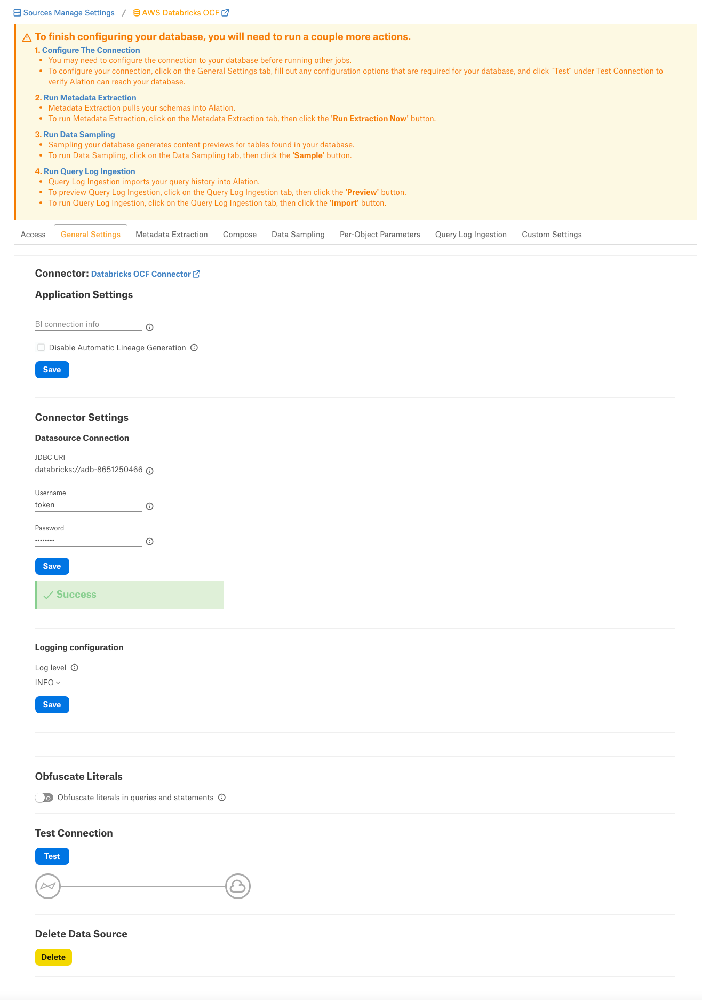
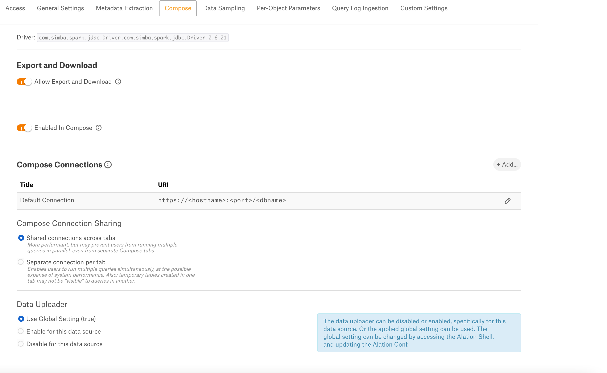
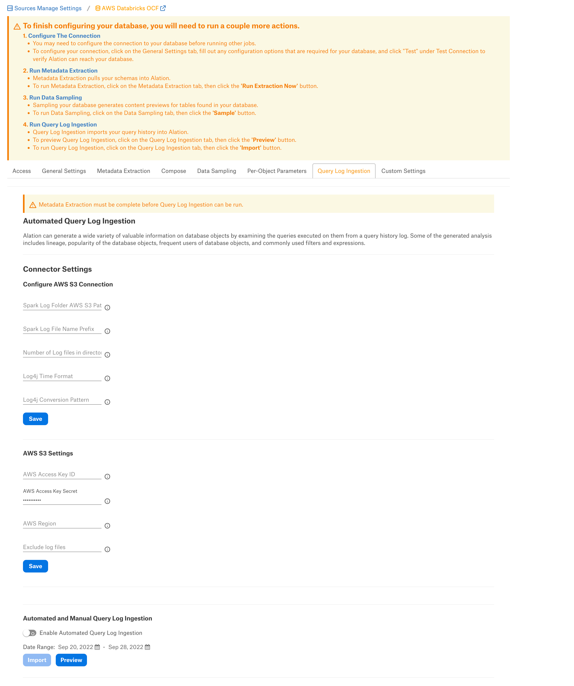

Databricks on AWS OCF Connector: Install and Configure¶
Alation Cloud Service Applies to Alation Cloud Service instances of Alation
Customer Managed Applies to customer-managed instances of Alation
Prerequisites¶
Firewall Configuration¶
Open the outbound TCP port 443 to Databricks on AWS server
Driver¶
The driver for Databricks on AWS is compiled with the connector and does not require installation. Refer to the Support Matrix. for your Alation release to find out the version of the available driver for Databricks on AWS.
Service Account¶
Sample SQL to create an account¶
CREATE USER alation WITH PASSWORD 'password';
GRANT ALL PRIVILEGES ON ALL TABLES IN SCHEMA schema_name TO alation;
Permissions for Metadata Extraction and Profiling¶
The service account must have the following permissions to perform MDE and profiling:
Workspace access — Refer to Manage users.
Cluster level access — Refer to Cluster access control.
By default, all cluster users have access to all data stored in a cluster’s managed tables unless table access control is enabled for that cluster. The table access control option is only available for high-concurrency clusters. Refer to Table Access Control for more information
If the Table Access Control option is enabled on the cluster:
Grant the SELECT privilege on all schemas and all their tables and views in a catalog.
GRANT USAGE ON CATALOG <catalog-name> TO `<user>@<domain-name>`; GRANT SELECT ON CATALOG <catalog-name> TO `<user>@<domain-name>`;Grant the SELECT privilege on a specific schema and all its tables and views.
GRANT USAGE ON SCHEMA <schema-name> TO `<user>@<domain-name>`; GRANT SELECT ON SCHEMA <schema-name> TO `<user>@<domain-name>`;Grant the SELECT privilege on specific tables and views in a schema.
GRANT USAGE ON SCHEMA <schema-name> TO `<user>@<domain-name>`; GRANT SELECT ON TABLE <schema-name>.<table-name> TO `<user>@<domain-name>`; GRANT SELECT ON VIEW <schema-name>.<view-name> TO `<user>@<domain-name>`;
Refer to Data object privileges for more information.
Authentication¶
The connector supports token-based authentication. Follow the steps in Databricks documentation to generate a personal access token for the service account and save it in a secure location:
You will use the personal access token as password when configuring your data source connection from Alation.
JDBC URI¶
When building the URI, include the following components:
Hostname or IP of the instance
Port number
HTTP path
Note
The property
UseNativeQuery=0is required for custom query-based sampling and profiling. Without this property in the JDBC URI, custom query-based sampling or profiling will fail. If you are not using custom query-based sampling and profiling in your implementation of this data source type, you can omit this property from the JDBC URI string.Find more information in ANSI SQL-92 query support in JDBC in Azure Databricks documentation.
Format¶
databricks://<Hostname>:<Port_Number>/default;transportMode=http;ssl=1;httpPath=<Path>;AuthMech=3;UseNativeQuery=0;
Example¶
databricks://dbc-65ebe48d-8ugcb.cloud.databricks.com:443/default;transportMode=http;ssl=1;httpPath=sql/protocolv1/o/66268686827900751/0520-195244-whizz481;AuthMech=3;UseNativeQuery=0;
QLI Configuration in Databricks¶
To configure QLI in Databricks on AWS:
Create an Amazon S3 bucket to store the log files. The bucket should be accessible to Alation.
Note
This should be an S3 bucket other than the Databricks root S3 bucket. The Databricks root S3 bucket operates like Alation’s chroot: it prevents outside tools from reading or modifying the files. Alation will experience Access Denied issues since the AWS storage settings bucket is access-protected by Databricks.
In admin settings of the Databricks user interface, set the Cluster Log Path and Destination under the Logging tab:
Destination is S3.
Note
Do not leave the destination path as None.
The bucket path should be accessible.
Your AWS region should match the new S3 bucket region.
The S3 bucket that stores the logs must have AWS IAM role settings as recommended in Configure S3 access with instance profiles in Databricks documentation.
Enable Logging using a Python init script.
Enable Logging¶
Warning
Databricks has deprecated init scripts stored on DBFS. Alation previously recommended storing the init script for enabling the logs on DBFS:
If you previously configured QLI, you must recreate the init script that enables logging to be stored as a workspace file. Refer to Recreate Databricks Logging Script Under Workspace.
If you are initially setting up QLI for an Azure Databricks data source, follow the steps below.
To enable logging:
Go to your workspace and create a new folder, for example,
alation_init_scripts.Note
You can give the new folder any name. We’re using
alation_init_scriptsas an example.Set the permissions on the folder to be Can Manage for Admins.
Note
We recommend restricting the permissions to Admins only to ensure that unauthorized users cannot manage this folder and modify the init script.
Create a new file, for example
alation_qli_init_sript.sh. Ensure you use the .sh extension.Copy the script given below in the file you created and review the contents to ensure there are no extra spaces or line breaks that could have been accidentally added while copy-pasting.
#!/bin/bash
echo "Executing Init script for Alation QLI"
echo "Executing on Driver:"
LOG4J_PATH="/home/ubuntu/databricks/spark/dbconf/log4j/driver/log4j2.xml"
echo "Adjusting log4j2.xml here: ${LOG4J_PATH}"
sed -i '0,/<PatternLayout pattern="%d{yy\/MM\/dd HH:mm:ss} %p %c{1}: %m%n%ex"\/>/s//<PatternLayout pattern="%d{yyyy-MM-dd HH:mm:ss.SS} [%t] %p %c{1}: %m%n"\/>/' ${LOG4J_PATH}
sed -i 's/<\/Loggers>/<Logger name="org.apache.spark.sql.execution.SparkSqlParser" level="DEBUG"\/><\/Loggers>/' ${LOG4J_PATH}
#!/bin/bash
echo "Executing on Driver: $DB_IS_DRIVER"
if [[ $DB_IS_DRIVER = "TRUE" ]]; then
LOG4J_PATH="/home/ubuntu/databricks/spark/dbconf/log4j/driver/log4j.properties"
else
LOG4J_PATH="/home/ubuntu/databricks/spark/dbconf/log4j/executor/log4j.properties"
fi
echo "Adjusting log4j.properties here: ${LOG4J_PATH}"
echo "log4j.logger.org.apache.spark.sql.execution.SparkSqlParser=DEBUG" >> ${LOG4J_PATH}
echo "log4j.appender.publicFile.layout.ConversionPattern=%d{yyyy-MM-dd HH:mm:ss.SS} [%t] %p %c{1}: %m%n" >> ${LOG4J_PATH}""", True)
Add the file with the script as an init script using the information in Configure a cluster-scoped init script using the UI.
Note
The path should look like /
<folder_path>/<script_name>.sh, for example,/alation_init_scripts/alation_qli_init_sript.sh.Ensure
Workspaceis selected as the Destination and notDBFS.The keyword
workspaceshould not be prefixed to the path.
Save the changes and restart the cluster.
Scala Script¶
As an alternative to the init script, you can use a Scala script to enable logging.
Run the following script in the Databricks cluster through a Scala notebook. This script, provided by Databricks, enables debug logs having queries.
Important
The script below should be run every time the cluster is started or restarted.
%scala
import org.apache.logging.log4j.LogManager
import org.apache.logging.log4j.core.LoggerContext
import org.apache.logging.log4j.core.config.{Configuration, LoggerConfig}
import org.apache.logging.log4j.core.config.Configurator
import org.apache.logging.log4j.Level
import org.apache.logging.log4j.core.layout.PatternLayout
import org.apache.logging.log4j.core.appender.RollingFileAppender;
import org.apache.logging.log4j.core.appender.RollingFileAppender.Builder;
import org.apache.logging.log4j.core.filter.AbstractFilterable;
import org.apache.logging.log4j.core.config.AppenderRef;
import org.apache.logging.log4j.core.appender.rewrite.RewriteAppender;
import com.databricks.logging.ServiceRewriteAppender;
import org.apache.logging.log4j.core.config.AbstractConfiguration;
Configurator.setRootLevel(Level.DEBUG);
val ctx = LogManager.getContext(false).asInstanceOf[LoggerContext];
val conf = ctx.getConfiguration();
val layout = PatternLayout.newBuilder()
.withConfiguration(conf)
.withPattern("%d{yyyy-MM-dd HH:mm:ss.SS} [%t] %p %c{1}: %m%n")
.build();
val rollingFileAppender = conf.getAppenders().get("publicFile.rolling").asInstanceOf[RollingFileAppender];
val appenderBuilder: RollingFileAppender.Builder[_] = RollingFileAppender.newBuilder();
appenderBuilder.setConfiguration(conf)
appenderBuilder.setName(rollingFileAppender.getName())
appenderBuilder.setLayout(layout)
appenderBuilder.withFileName(rollingFileAppender.getFileName())
appenderBuilder.withFilePattern(rollingFileAppender.getFilePattern())
appenderBuilder.withPolicy(rollingFileAppender.getTriggeringPolicy())
appenderBuilder.setBufferedIo(false)
appenderBuilder.setBufferSize(rollingFileAppender.getManager().getBufferSize())
appenderBuilder.setImmediateFlush(rollingFileAppender.getImmediateFlush())
appenderBuilder.withCreateOnDemand(rollingFileAppender.getManager().isCreateOnDemand())
val appender = appenderBuilder.build();
val appenderRef = Array(AppenderRef.createAppenderRef(appender.getName(), null, null));
var policy = new ServiceRewriteAppender();
val rewriteAppender = conf.getAppenders().get("publicFile.rolling.rewrite").asInstanceOf[RewriteAppender];
val updatedRewriteAppender = RewriteAppender.createAppender(rewriteAppender.getName(), String.valueOf(rewriteAppender.ignoreExceptions()), appenderRef, conf, policy, rewriteAppender.getFilter());
rollingFileAppender.stop();
rewriteAppender.stop();
val config = ctx.getConfiguration().asInstanceOf[AbstractConfiguration];
config.removeAppender(rollingFileAppender.getName());
config.removeAppender(rewriteAppender.getName());
conf.addAppender(appender);
conf.addAppender(updatedRewriteAppender);
appender.start();
updatedRewriteAppender.start();
conf.getRootLogger().addAppender(updatedRewriteAppender, null, null);
ctx.updateLoggers();
import org.apache.log4j.{LogManager, Level, ConsoleAppender}
import org.apache.commons.logging.LogFactory
import org.apache.log4j.PatternLayout
LogManager.getRootLogger().setLevel(Level.DEBUG)
val ca = LogManager.getRootLogger().getAppender("publicFile")
println("layout " + ca.getLayout.asInstanceOf[PatternLayout].getConversionPattern)
ca.setLayout(new PatternLayout("%d{yy/MM/dd HH:mm:ss} [%t] %p %c{1}: %m%n"));
Configuration in Alation¶
Step 1: Install the Connector¶
Alation On-Prem¶
Important
Installation of OCF connectors requires Alation Connector Manager to be installed as a prerequisite.
If this has not been done on your instance, install the Connector Manager: Install Alation Connector Manager.
Make sure that the connector Zip file which you received from Alation is available on your local machine.
Install the connector on the Connectors Dashboard page. Refer to Manage Connector Dashboard for details.
Alation Cloud Service¶
Note
OCF connectors require Alation Connector Manager. Alation Connector Manager is available by default on all Alation Cloud Service instances and there is no need to separately install it.
Make sure that the OCF connector Zip file that you received from Alation is available on your local machine.
Install the connector on the Connectors Dashboard page: refer to Manage Connector Dashboard.
Step 2: Create and Configure a New Databricks on AWS Data Source¶
Log in to the Alation instance and add a new Databricks on AWS source by clicking on Apps > Sources > Add > Data Source.
Provide a Title for the data source and click on *Continue Setup.
From the Database Type dropdown, select Databricks OCF Connector. You will be navigated to the Settings page of your new Databricks on AWS OCF data source.
Access¶
On the Access tab, set the data source visibility using these options:
Public Data Source—The data source will be visible to all users of the catalog.
Private Data Source—The data source will be visible to the users allowed access to the data source by Data Source Admins.
You can add new Data Source Admin users in the Data Source Admins section.
General Settings¶
Note
This section describes configuring settings for credentials and connection information stored in the Alation database. If your organization has configured Azure KeyVault or AWS Secrets Manager to hold such information, the user interface for the General Settings page will change to include the following icons to the right of most options:

By default, the database icon is selected, as shown. In the vault case, instead of the actual credential information, you enter the ID of the secret. See Configure Secrets for OCF Connector Settings for details.
Perform the configuration on the General Settings tab:

Specify Application Settings:
Parameter
Description
BI Connection Info
Not applicable
Disable Automatic Lineage Generation
Not applicable
Click Save.
Specify Connector Settings:
Parameter
Description
Data Source Connection
JDBC URI
Specify the JDBC URI in the required format.
Username
Use the value
token.Password
Paste the personal access token for the service account.
Logging Information
Log Level
Select the Log Level to generate logs. The available log levels are based on the log4j framework.
Click Save.
Obfuscate Literals - Enable this toggle to hide the details of the queries in the catalog page that are ingested via QLI or executed in Compose. This toggle is disabled by default.
Under Test Connection, click Test to validate network connectivity.
Add-On OCF Connector for dbt¶
The dbt connector can be used as an add-on with another OCF connector to extract and catalog descriptions and lineage from dbt models, sources, and columns in dbt Core or dbt Cloud. See Add-On OCF Connector for dbt on how to use this connector.
Metadata Extraction¶
You can perform a default extraction which is based on default SQL queries that are built in the connector code.
Application Settings¶
Enable Raw Metadata Dump or Replay: The options in this drop list can be used to dump the extracted metadata into files in order to debug extraction issues before ingesting the metadata into Alation. This feature can be used during testing in case there are issues with MDE. It breaks extraction into two steps: first, the extracted metadata is dumped into files and can be viewed; and second, it can be ingested from the files into Alation. It is recommended to keep this feature enabled only if debugging is required.
Enable Raw Metadata Dump: Select this option to save the extracted metadata into a folder for debugging purposes. The dumped data will be saved in four files (attribute.dump, function.dump, schema.dump, table.dump) in the folder opt/alation/site/tmp/ inside Alation shell.
Enable Ingestion Replay: Select this option to ingest the metadata from the dump files into Alation.
Off - Disable the Raw Metadata Dump or Replay feature. Extracted metadata will be ingested into Alation.
Selective Extraction¶
On the Metadata Extraction tab, you can select the Schemas to include or exclude from extraction. Selective extraction settings are used to apply a filter to include or exclude a list of schemas.
Enable the Selective Extraction toggle if you want only a subset of schemas to be extracted.
Click Get List of Schemas to first fetch the list of schemas. The status of the Get Schemas action will be logged in the Extraction Job Status table at the bottom of the Metadata Extraction page.
When Schema synchronization is complete, a drop-down list of the Schemas will become enabled.
Select one or more schemas as required.
Check if you are using the desired filter option. Available filter options are described below:
Filter Option
Description
Extract all Schemas except
Extract metadata from all Schemas except from the selected Schemas.
Extract only these Schemas
Extract metadata only from the selected Schemas.
Click Run Extraction Now to extract metadata. The status of the extraction action is also logged in the Job History table at the bottom of the page.
Automated Extraction¶
If you wish to automatically update the metadata extracted into the Catalog, under Automated and Manual Extraction, turn on the Enable Automated Extraction switch and select the day and time when metadata must be extracted. The metadata extraction will be automatically scheduled to run on the selected schedule.
Compose¶
On the Compose tab, an admin can enable the use of the Compose tool for this data source.
Enable or disable the Allow Export and Download toggle to export or download the results of this data source.
Enable the Enabled in Compose toggle to enable Compose for this data source.
Provide the JDBC URI in the Default Connection field which Compose will use as a default connection and Save.
Select Compose Connection Sharing option based on the description in the table:
Compose Connection Option
Description
Shared connections across tabs
This option lets users use the same connection across multiple Compose tabs.
Separate connection per tab
Users can use different connections for each Compose tab, which enables them to run multiple queries at the same time.
Select a Data Uploader option based on the description below:
Data Uploader
Description
Use Global Setting (True)
Or
Use Global Setting (False)
Use the global setting option that is set in alation_conf using alation.data_uploader.enabled flag.
Users can upload data if the flag is set to true or if the flag is set to false, users cannot upload the data for any data source.
Enable for this data source
Use this option to enable the data upload for this data source and override the global setting if the global setting in alation_conf if it is set to false.
Disable for this data source
Use this option to disable the data upload for this data source and override the global setting in alation_conf if it is set to true.
Note
OAuth connection is not supported for this data source.
Data Sampling¶
Automated and Manual Sampling¶
Users can either perform manual sampling or enable automated sampling:
To perform manual sampling, make sure that the Enable Automated Sampling toggle is Off. Click the Sample button to do manual sampling.
Set the Enable Automated Sampling toggle to On to perform the automated sampling.
Set a schedule in the corresponding fields of the schedule section, specify values for week, day and time.
Select the number of tables to be sampled by selecting a value in the dropdown list. By default, all tables are sampled. When a specific number of tables is selected, unprofiled and popular tables are prioritized.
Click Sample.
Important
To use custom query-based sampling and profiling, ensure that the JDBC URI includes the UseNativeQuery=0 property.
If you enable dynamic profiling, then users should ensure that their individual connections also include this property.
Per-Object Parameters¶
Refer to Per-Object Parameters.
Query Log Ingestion¶
Configure the following parameters in the following sections to perform file based QLI for this datasource.
Connector Settings¶
Configure Amazon S3 Connection¶
Note
The common format of the Databricks log files is log4j-yyyy-mm-dd-hh.log.gz and the current hour log or real-time will be in the log4j-active.log. format.
Specify the Configure Amazon S3 Connections settings and click Save:
Parameter |
Description |
|---|---|
Spark Log Folder AWS S3 Path |
Specify the path of S3 bucket where log files are stored. Format: Example: /databricks-logging-20220420/dbc-36ad4224-mb19/0330-193314- wuadi0q9/driver |
Spark Log File Name Prefix |
A common name prefix for the files to be extracted is log4j-. Example: Files to be extracted usually have names like: log4j-2022-01-01-10.log.gz. Setting the prefix value to log4j- serves this file name format. |
Number of Log Files in Directory |
Provide the limit of log files that needs to be extracted from the folder. If not specified, all files matching the prefix will be captured. |
Log4j Time Format |
The time format is set based on the script you are using. The value should be set to yyyy-MM-dd HH:mm:ss. |
Log4j Conversion Pattern |
The conversion pattern is set based on the init script you are using. The format is TIMESTAMP [THREAD] LEVEL LOGGER MESSAGE. Note: The thread name for Databricks has a space. We enclose the thread name in square brackets to enable correct processing in Alation. |
Amazon S3 Settings¶
Specify the Amazon S3 Settings and click Save:
Parameter |
Description |
|---|---|
AWS Access Key ID |
Provide the AWS access key ID. Make sure that the IAM user has read access to the bucket where the log files are stored. |
AWS Access Key Secret |
Provide the AWS access key secret. |
AWS Region |
Specify the AWS region. |
Exclude log files |
Provide the log file names that you want to exclude from ingestion. |
Automated and Manual Query Log Ingestion¶
Users can either perform manual QLI or enable automated QLI:
To perform manual QLI, make sure that the Enable Automated Query Log Ingestion toggle is Off. Click the Import button to do manual QLI.
Set the Enable Automated Query Log Ingestion toggle to On to perform the automated QLI.
Set a schedule in the corresponding fields of the schedule section, specify values for week, day and time.
Note
Hourly schedule for automated QLI is not supported.
Custom Settings¶
This configuration option is available if Profiling V2 is enabled.
To profile a column, Alation runs a default query if no custom query is specified for this column. Default queries for column profiling differ depending on the data type: numeric or non-numeric.
The default query supplied by Alation can be modified based on the user requirements and datasource type. The following default query template can be used to revert back to the default query from a custom query:
Numeric columns:
SELECT MIN({column_name}) AS MIN, MAX({column_name}) AS MAX, AVG({column_name}) AS MEAN, (COUNT(*) - COUNT({column_name})) AS "#NULL", (CASE WHEN COUNT(*) > 0 THEN ((COUNT(*) - COUNT({column_name})) * 100.0 / COUNT(*)) ELSE 0.0 END) AS "%NULL" FROM {schema_name}.{table_name};
Non numeric columns:
SELECT ((SUM(CASE WHEN {column_name} IS NULL THEN 1 ELSE 0 END))) AS "#NULL", (CASE WHEN COUNT(*) > 0 THEN ((((SUM(CASE WHEN {column_name} IS NULL THEN 1 ELSE 0 END))) * 100.0 / count(*)) ) ELSE 0.0 END ) AS "%NULL" FROM {schema_name}.{table_name};
Important
The profiling queries MUST contain {column_name}, {schema_name}, and {table_name}. Users must check the compatibility of the default query based on the datasource type and modify it if required.
The default profiling query calculates the Profiling stats that are displayed on the Overview tab of the Column catalog page. When you customize the query, you can also customize the statistics that should be calculated and displayed:

{kind=link}
{kind=link}
Troubleshooting¶
Refer to Troubleshooting.